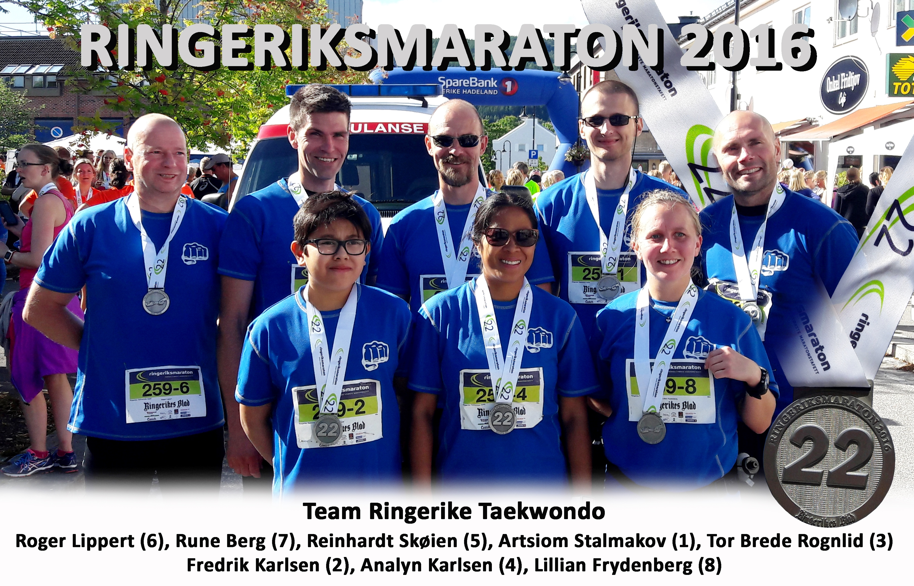

Innlegg
Ringeriksmaraton 2016

Klubben stilte også i år lag i Ringeriksmaraton. Dette har blitt en hyggelig tradisjon som vi ønsker å holde på. Tor-Brede har vært primus motor og han har allerede begynt å fordele etappene for 2017. I år klarte vi å stille et lag bestående bare av klubbmedlemmer. Vi håper neste år å stille to lag.
Etter vell utført maraton samlet vi laget på Jevnaker og tok dette flotte bildet før ferden videre var en hyggelig middag på Peppes. Noen av de voksne tok også turen videre til en av våre flotte sponsorer. 2 Brødre.